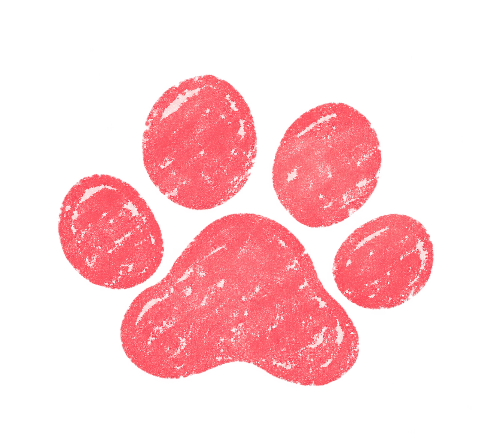

대 한 팩 폭 고 등 법 원
판 결 문
사건번호 2026T字 제0000호
당신 혹은 누군가의 사연을 있는 그대로 진술하십시오.
본 법정이 T인지 F인지 엄중히 판결하겠습니다.
사연 진술
0 / 500
🐶
강아지 부고 예시
💔
이별 통보 예시
🎂
생일 서프라이즈 예시
선 고 요 청
판 결 중 입 니 다
죄목:
—
주 문
—
T
F 감성 100
T 이성 100
T 0

이 유
—
—